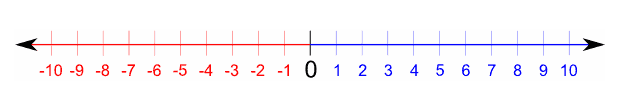

Data Rascals: Contiguous Data
A glitch in the matrix
Let's start with a hypothetical situation. You work as a developer for a cell phone company. They would like to show the plan discounts available on their website. The discounts are based on the level of service you pick when you sign up.
The data looks something like this:
var tiers = new List<UsageTier>{
new UsageTier{ Minutes = 100, Discount = 0.0m},
new UsageTier{ Minutes = 200, Discount = 0.05m},
new UsageTier{ Minutes = 300, Discount = 0.1m},
new UsageTier{ Minutes = 400, Discount = 0.2m},
new UsageTier{ Minutes = 500, Discount = 0.3m},
new UsageTier{ Minutes = 600, Discount = 0.5m},
new UsageTier{ Minutes = 700, Discount = 0.5m},
new UsageTier{ Minutes = 800, Discount = 0.5m}
};
That's when you notice something strange. Is that a glitch in the matrix? Nope. There seems to be a maximum discount but instead of stopping they just keep adding tiers. When you ask the business owner how they want to convey this information to the user they gently explain that they only want to show up to the maximum discount. As per the business owner the maximum discount will always be 0.5 or 50%. Then they explain that some plans don't reach 50% and you should show them all. Unfortunately we can't change how business is using this data structure so we will have to write some code to support their usage.
A first shot at the problem
So let's try and solve this in the simplest way possible.
var trimmedTiers = new List<UsageTier>();
for (var tierCounter = 0; tierCounter < tiers.Count; tierCounter++ )
{
if(0.5m == tiers[tierCounter].Discount)
{
trimmedTiers.Add(tiers[tierCounter]);
break;
}
trimmedTiers.Add(tiers[tierCounter]);
}
//Outputting trimmedTiers would show
new UsageTier{ Minutes = 100, Discount = 0.0m},
new UsageTier{ Minutes = 200, Discount = 0.05m},
new UsageTier{ Minutes = 300, Discount = 0.1m},
new UsageTier{ Minutes = 400, Discount = 0.2m},
new UsageTier{ Minutes = 500, Discount = 0.3m},
new UsageTier{ Minutes = 600, Discount = 0.5m}
Great so we loop through the tiers adding it to a new list. If we hit our maximum then we add it to the new list and stop there. Seems simple enough. But it never ends there does it?
General Problem and Sergeant Reuse
Let's step back and look at the problem again. We have a list of data with a specific order. The tiers are lined up one after the other. We are trying to grab a certain subset of those tiers. This sounds like a general problem that might have already been solved. Hmm. Let's see if we can prove our fifth grade teachers correct when they said we would need what they were teaching someday.
First lets line up the items end to end:
If my memory serves me correctly we can work with items lined up and adjacent. If you squint hard enugh it started to look like one of these:

Number line courtesy of http://www.mathsisfun.com/number-line.html
It's an object line instead of a number line but I bet we can still select a range of them.
First lets start with a simple example to see if this would work.
//create a number line from -10 to 10
var numbers = new List<int>();
for(var i = -10; i <= 10; i++)
{
numbers.Add(i);
}
var numberRange = numbers.SelectRange(leftBound => leftBound == -5, rightBound => rightBound == 5).ToList();
//outputting numberRange would give us
"-5,-4,-3,-2,-1,0,1,2,3,4,5"
That works. Our code is pretty explicit and tells us what we want to do without telling us how. Here is how the implementation works:
Under the nice syntax of SelectRange we see the SkipUntil and TakeUntil methods. This breaks the work down for finding the left bound and the right bound of the range. These methods can be used individually to give the developer more freedom in expressing their range and the SelectRange method wraps them up for the more straight-forward use cases.
Usage tier discounts
So right now it looks like I went off into re-usable code land but I still haven't shown that this is the solution to our problem. Lets take a look at using this for the cell phone usage tier problem:
var tiers = new List<UsageTier>{
new UsageTier{ Minutes = 100, Discount = 0.0m},
new UsageTier{ Minutes = 200, Discount = 0.05m},
new UsageTier{ Minutes = 300, Discount = 0.1m},
new UsageTier{ Minutes = 400, Discount = 0.2m},
new UsageTier{ Minutes = 500, Discount = 0.3m},
new UsageTier{ Minutes = 600, Discount = 0.5m},
new UsageTier{ Minutes = 700, Discount = 0.5m},
new UsageTier{ Minutes = 800, Discount = 0.5m}
};
var trimmedTiers = tiers.TakeUntil(tier => 0.5m == tier.Discount).ToList();
//Outputting trimmedTiers would show
new UsageTier{ Minutes = 100, Discount = 0.0m},
new UsageTier{ Minutes = 200, Discount = 0.05m},
new UsageTier{ Minutes = 300, Discount = 0.1m},
new UsageTier{ Minutes = 400, Discount = 0.2m},
new UsageTier{ Minutes = 500, Discount = 0.3m},
new UsageTier{ Minutes = 600, Discount = 0.5m}
Ok, so it solves our problem with one line of more re-usable code. We don't need all the range semantics to solve the problem for our business so we can skip the rest of the range stuff and just use TakeUntil. But since we have them let's see what we can do with them to solve other interesting range questions.
Text selection
If you're working with text then Regular Expressions are great. But let's see what happens when we use ranges to find simple patterns in text.
var words = "Sometimes I am only interested in a certain phrase. Sometimes I used regular expressions. Other times I like innefficient approaches. Some days you win and some days you lose. Never underestimate simple approaches to problems."
.Replace(".", "")
.Split(new char[] { ' ' });
var phraseWords = words
.SkipUntilExlusive(s => s == "like").TakeUntil(s => s == "approaches")
.ToList();
//outputting string.Join(" ", phraseWords.ToArray())
"innefficient approaches"
That worked pretty well but it only found the first instance of "like*approaches". Now how about selecting all instances of a range in some text:
var sentences = "Sometimes I am only interested in a certain phrase. Sometimes I used regular expressions. Other times I like innefficient approaches. Some days you win and some days you lose. Never underestimate people who like simple approaches to problems."
.Split(new char[] { '.' });
var phraseWords = sentences.Select(sentence =>
string.Join(" ", sentence
.Split(new char[] { ' ' })
.SkipUntilExlusive(s => s == "like")
.TakeUntil(s => s == "approaches")
.ToArray())
)
.Where(text => !string.IsNullOrWhiteSpace(text))
.ToList();
//phraseWords[0] - "innefficient approaches"
//phraseWords[1] - "simple approaches"
That seems pretty straightforward. I'm not sure I would use this to search massive documents but it does look like it would fit into a map stage of map/reduce pretty well.
Date range selection
//a calendar is just a list of sequential dates right? :-)
var marchCalendar = new List<DateTime>();
for (var i = 1; i <= 31; i++) marchCalendar.Add(new DateTime(2014, 3, i));
var conventionDates = marchCalendar
.SelectRange(start => start.Day == 5, end => end.DayOfWeek == DayOfWeek.Saturday)
.ToList();
//outputting conventionDates would give us
new DateTime(2014, 3, 5), new DateTime(2014, 3, 6), new DateTime(2014, 3, 7), new DateTime(2014, 3, 8)
That's pretty fun. You could start to ask the calendar all sorts of questions. How many hours from now until your next vacation day springs to mind.
The right bound
So where does all this leave us? Well, we solved the business problem first and implemented the bare minimum necessary to do so in the TakeUntil method. The rest of it was just riffing on the ideas triggered by the initial problem. Performance-wise our solution is pretty CPU heavy and looks pretty inefficient on larger lists as it has to traverse the entire list testing each element. The good news is that because we are using IEnumerable and yield return the memory footprint is light and we don't have to keep the entire list in memory in order to process it. That means we can entertain processing large lists in parallel or stream infinite lists to find multiple instances.
Hopefully this is as useful for you as it was for me. It was a fun thought experiment with practical applications. After all, many things in life can be thought of as sequential lists. Each second of the day has a predecessor and successor that makes up the infinite stream of existence. Each second taking it's place next to the previous one in an inexorable march towards infinity.
secondsInLife.Select(moment =>
moment.SelectRange(start => start.Feeling >= "Happiness", end => end.Feeling < "Happiness")
.ToList()
).ToList();
//outputs all the happy moments in you life.
//...hopefully not an empty list.
Further resources
The code for SelectRange and TakeUntil can be found here.